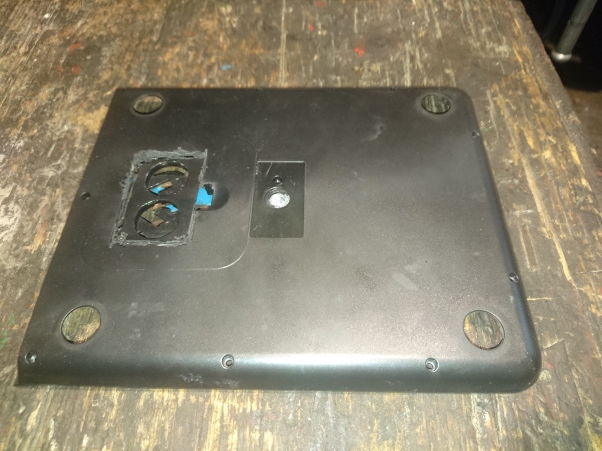
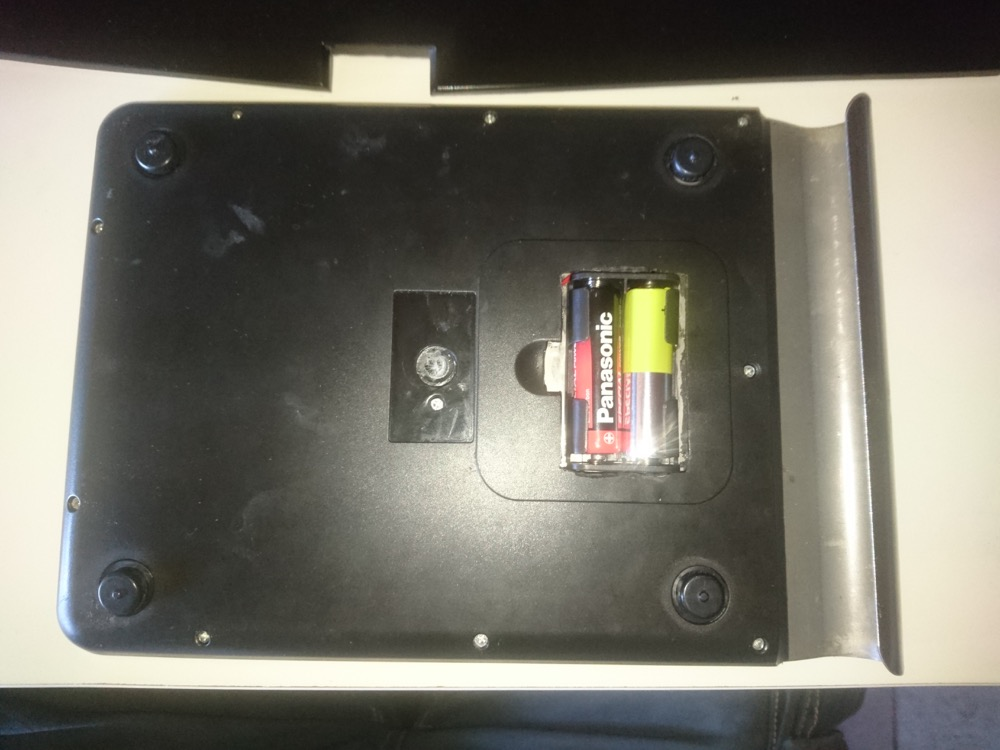

tgauweiler / Kitchen Scale Battery Upgrade
Introduction
The kitchen scale ate batteries up in no time and these button style ones are pretty pricy. Also if the batteries get low, the scale can’t measure heavier stuff and just throws an error. So I opened it up and noticed that both batteries are wired in parallel and are providing 3V. This lead me to the plan, to replace both with two 1.5V AA batteries wired in series.
Build

First I removed the old battery compartment with my trusty Dremel.

And replaced it with a fitting new battery compartment I had lying around and fixed it in place with some tape.
Conclusion
While the end result is not the prettiest, it works like a charm and I didn’t had to replace the batteries so far. There are only some millimeters between the new batteries and the table, but it is enough.